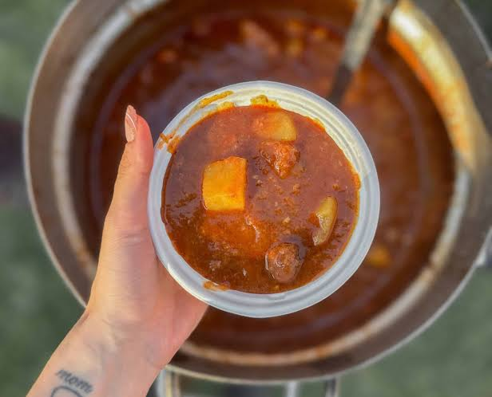
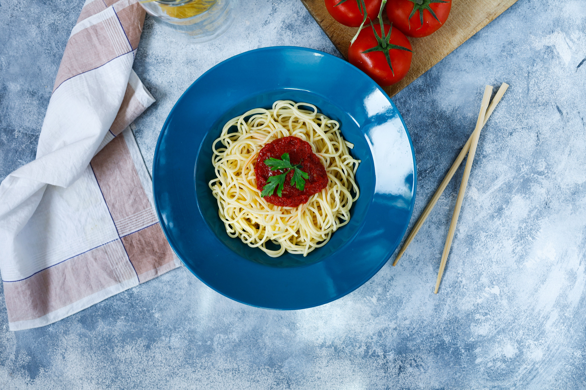

Sýty tatranský kotlíkový guláš (400 g)
Hovädzie mäso, domáce knedle, cibuľka.

Tatranská Polianka
„Naša reštaurácia v Tatranskej Polianke vám ponúka poctivé domáce jedlá pripravené z lokálnych surovín. Nájdete u nás príjemné prostredie, kľudnú atmosféru pre stretnutia a plné zázemie pre rodiny s deťmi.“
Kapacita: 50 miest v interiéri + 30 miest na letnej terase
Vybavenie: Detské stoličky, detský kútik, bezplatné parkovanie priamo pri objekte

Hovädzie mäso, domáce knedle, cibuľka.

Tradičné zemiakové halušky, syrová ovčia bryndza, opečená slaninka.

Chrumkavý kurací rezeň, varené zemiaky s maslom a petržlenovou vňaťou.

Zemiakové halušky, dusená kyslá kapusta, opečená slaninka.

Kuracie prsia v strúhanke, zemiaková kaša, malý mrkvový šalátik.

Špagety dusené v paradajkovej omáčke, strúhaný syr. Vyrobené z čerstvých domácich surovín.
alebo cez telefónne číslo
+421 949 212 446